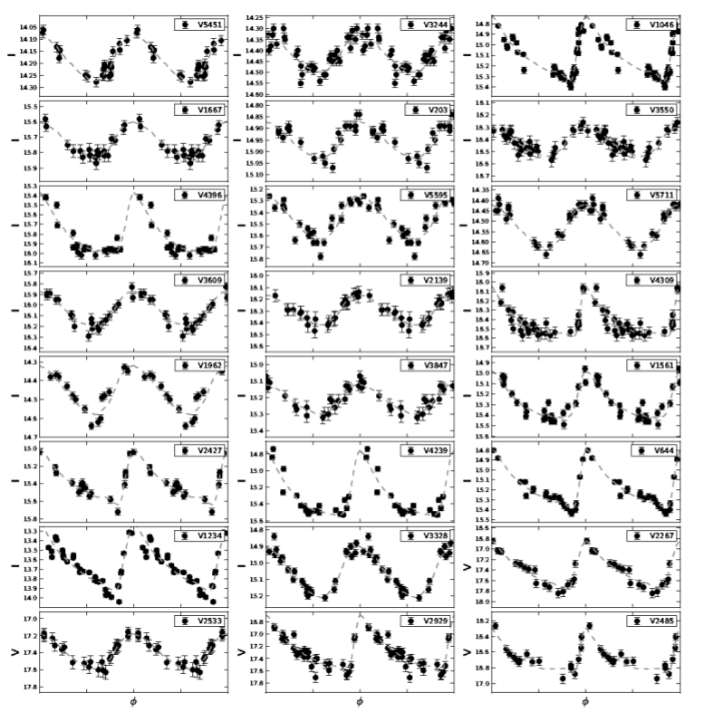
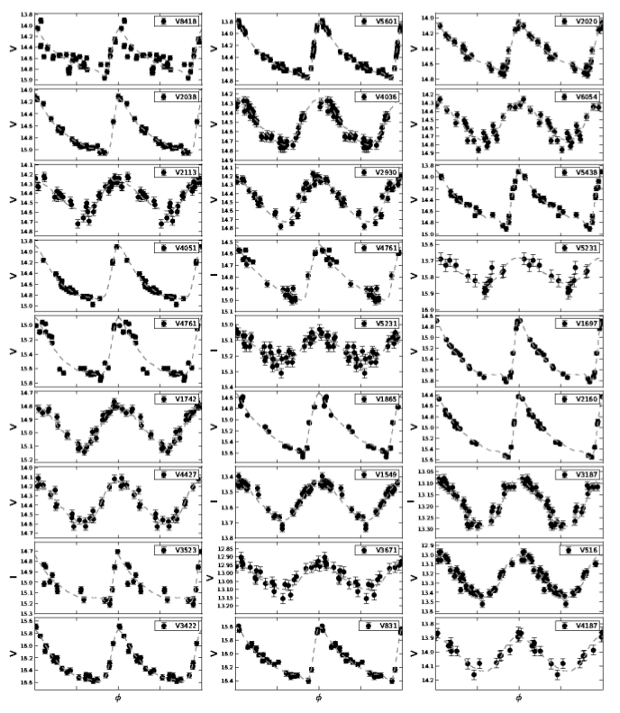

Photometric Survey of RR Lyrae Stars Around Globular Cluster NGC5139
Campaign of observations 2010-2017 from National Astronomical Observatory of Venezuela
1m Reflector Telescope and 1m Jürgen Stock Telescope (1.5m Camera Schmidt)
Figure 1:Spatial coverage of the survey
Figure 2:Light curves of RR Lyrae stars around globular cluster Omega Centauri
 Aims